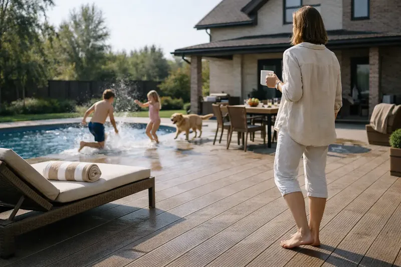
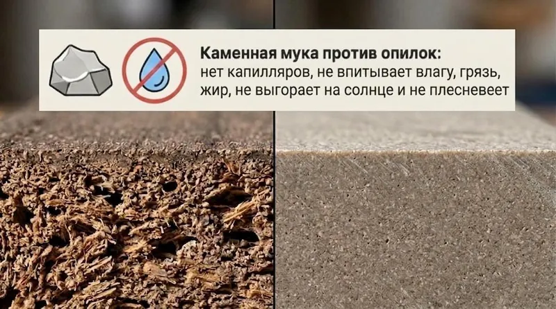
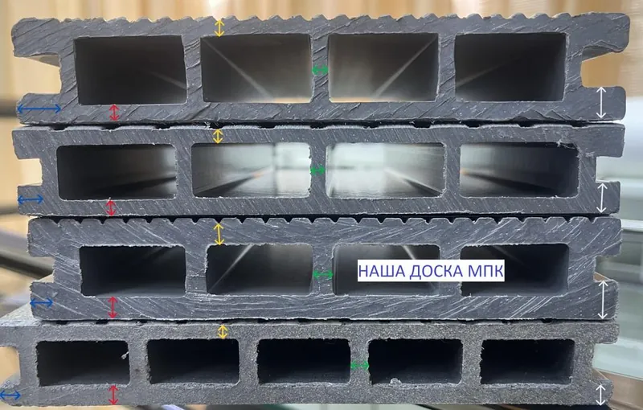

Камень вместо опилок
В обычном ДПК до 80% состава — древесная мука. В МПК её нет: основа — минеральная. У камня нет капилляров, поэтому он физически не впитывает влагу.
Террасная доска из минерально-полимерного композита Официальный дистрибьютор завода «Мастодек»
Не впитывает вино и жир, не выгорает на солнце, не «плывёт» после зимы и не просит ежегодной покраски. Доска для террас, пирсов и зон у бассейна, у которой внутри не опилки, а камень.

01 Проблема
Обычная террасная доска стареет быстрее, чем вы успеваете к ней привыкнуть. Четыре признака, которые замечают все — и о которых молчат в глянцевых каталогах.
Пигмент выгорает за два-три сезона. Сочный шоколад превращается в серо-земельный, а продавец называет это «естественным осветлением» и не считает гарантийным случаем.
Пролитое вино и жир от шашлыка проникают в открытые поры намертво. Это уже не загрязнение, а часть интерьера — отмыть не получится.
Микротрещины и занозы. Ходить босиком по собственной террасе становится лотереей: прилетит или пронесёт.
Доску вздуло и выгнуло, крепёж вырвало «с мясом». Между досками пороги и щели — по настилу неудобно и травмоопасно ходить.
02 Материал
МПК — не «улучшенный ДПК», а материал другой природы. Внутри не опилки, а минеральная мука. Это меняет всё, что происходит с настилом после монтажа.
В обычном ДПК до 80% состава — древесная мука. В МПК её нет: основа — минеральная. У камня нет капилляров, поэтому он физически не впитывает влагу.
Сырьё, которое не было в переработке, держит эластичность на морозе и жёсткость при +50 °C. Тяжёлые кресла и мангальная зона настил не деформируют.
Структура герметична: жир, вино и уголь из кальяна остаются на поверхности. Протереть салфеткой или смыть из шланга — и следа не остаётся.

03 Сравнение
Обычный ДПК и МПК выглядят похоже только в шоуруме. Разница начинается, когда настил попадает под дождь, солнце и шашлык.
| Критерий | Обычный ДПК | МПК «Мастодек» |
|---|---|---|
| Состав | До 80% древесной муки — органика | Минеральная мука: древесины нет вовсе |
| Влага и плесень | Впитывает воду и служит питательной средой для грибка | Капилляров нет — влага не проникает |
| Пятна: вино, жир, уголь | Въедаются в открытые поры намертво | Остаются на поверхности, смываются водой |
| Солнце и цвет | Выгорает за 2–3 сезона и не считается гарантией | Первичный пигмент — цвет держится годами |
| Геометрия | Разбухает, выгибается «лодочкой», вырывает крепёж | Стабильна от −30 °C до +50 °C |
| Уход | Покраска, шлифовка, антисептик — каждый сезон | Вода из шланга |
| Итог для владельца | Абонентская плата за ремонт | Настил, к которому не возвращаетесь |
04 Проверка
Название на этикетке ничего не гарантирует: внутрь иногда кладут тот же ДПК с добавкой минерала «для веса». Смотреть надо на срез.
Тонкая стенка — это вмятины от ножек мебели и блестящие «лысые» дорожки в проходных местах. Плотный МПК держит удар там, где другие проминаются.
Рёбра — внутренний скелет доски. На солнце и морозе материал «дышит»: слабый скелет не удержит форму, и ровный настил превратится в «волнующееся море».
Длинный и тонкий — идеальный рычаг для излома: доска «гуляет» и стучит при каждом шаге. Короткий и массивный держит мёртво десятилетиями.
Математика против маркетинга. Экономия 10–15% на ценнике часто означает «вымытые» стенки и рёбра: производитель выигрывает тонны сырья. Через несколько лет это полная замена настила — двойные расходы вместо одной покупки.

05 Объекты
Террасы, пирсы и зоны у бассейнов спустя два, три и пять сезонов. Включая объект на берегу водохранилища, с которого началась «минеральная эра».
06 О нас
В 2022 году нам достался объект с жёстким условием: пять лет гарантии на все работы и материалы. С обычным ДПК такую гарантию дать было нельзя — он выгорал за сезон и рассыпался в мокрых зонах у бассейна.
Мы — команда RightBoard. Наш путь в строительстве научил простому правилу: продать материал легко, а сделать так, чтобы терраса радовала и через десять лет — вопрос честности.
07 Консультация
Мы не будем названивать с вопросом «ну что, когда купите?». Задача — помочь спроектировать решение, которое будет радовать вас годы. Бесплатно и ни к чему не обязывает.
Расскажите, что планируете: крыльцо, зону у бассейна, баню, террасу ресторана или пирс. Объясним, где в вашем случае могут быть подводные камни.